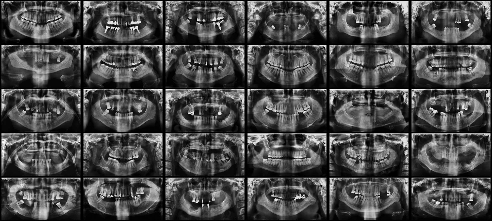

2017
Pan-nomĭnālis
Fotografias

Antony
- Dimensões
- 650 × 1850 mm
- Série
- Pan-nomĭnālis
- Ano
- 2017
Pan-nomĭnālis é uma série composta por imagens de radiografias panorâmicas odontológicas organizadas em polípticos. O trabalho foi desenvolvido a partir da análise de aproximadamente mil radiografias pertencentes a um arquivo clínico, classificadas segundo os prenomes dos indivíduos examinados.
Cada obra reúne pessoas que compartilham um mesmo nome. Embora os prenomes sejam idênticos, as radiografias revelam anatomias singulares marcadas por diferentes histórias biológicas e clínicas. Ausências dentárias, próteses, implantes, enxertos ósseos e outras intervenções tornam visíveis trajetórias individuais que permanecem ocultas sob uma mesma designação nominal.
O título Pan-nomĭnālis combina a referência às radiografias panorâmicas com o termo latino nomĭnālis, relacionado ao nome e à nomeação. A série investiga as relações entre identidade, classificação e diferença, deslocando o nome próprio de sua função habitual de individualização para transformá-lo em um princípio de agrupamento.
Nas imagens, o rosto desaparece. Permanecem apenas estruturas ósseas, dentes e vestígios de intervenções realizadas ao longo da vida. A identificação dos indivíduos torna-se impossível, mas suas singularidades continuam inscritas na materialidade do corpo.
Cada políptico apresenta um conjunto de pessoas que compartilham o mesmo nome e evidencia a impossibilidade de reduzir essas existências a uma única categoria.
A série propõe uma reflexão sobre os sistemas de catalogação utilizados para organizar indivíduos em arquivos, bancos de dados e registros institucionais. Ao reunir corpos distintos sob uma mesma designação linguística, Pan-nomĭnālis revela as tensões entre aquilo que aproxima os sujeitos através da linguagem e aquilo que permanece irredutivelmente singular em cada um deles.